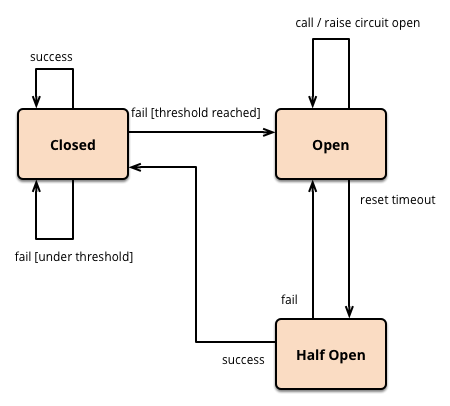
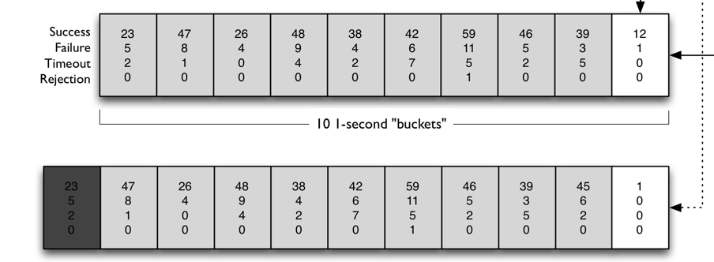

- 00 开篇词 微服务，从放弃到入门.md.html
- 01 到底什么是微服务？.md.html
- 02 从单体应用走向服务化.md.html
- 03 初探微服务架构.md.html
- 04 如何发布和引用服务？.md.html
- 05 如何注册和发现服务？.md.html
- 06 如何实现RPC远程服务调用？.md.html
- 07 如何监控微服务调用？.md.html
- 08 如何追踪微服务调用？.md.html
- 09 微服务治理的手段有哪些？.md.html
- 10 Dubbo框架里的微服务组件.md.html
- 11 服务发布和引用的实践.md.html
- 12 如何将注册中心落地？.md.html
- 13 开源服务注册中心如何选型？.md.html
- 14 开源RPC框架如何选型？.md.html
- 15 如何搭建一个可靠的监控系统？.md.html
- 16 如何搭建一套适合你的服务追踪系统？.md.html
- 17 如何识别服务节点是否存活？.md.html
- 18 如何使用负载均衡算法？.md.html
- 19 如何使用服务路由？.md.html
- 20 服务端出现故障时该如何应对？.md.html
- 21 服务调用失败时有哪些处理手段？.md.html
- 22 如何管理服务配置？.md.html
- 23 如何搭建微服务治理平台？.md.html
- 24 微服务架构该如何落地？.md.html
- 25 微服务为什么要容器化？.md.html
- 26 微服务容器化运维：镜像仓库和资源调度.md.html
- 27 微服务容器化运维：容器调度和服务编排.md.html
- 28 微服务容器化运维：微博容器运维平台DCP.md.html
- 29 微服务如何实现DevOps？.md.html
- 30 如何做好微服务容量规划？.md.html
- 31 微服务多机房部署实践.md.html
- 32 微服务混合云部署实践.md.html
- 33 下一代微服务架构Service Mesh.md.html
- 34 Istio：Service Mesh的代表产品.md.html
- 35 微博Service Mesh实践之路（上）.md.html
- 36 微博Service Mesh实践之路（下）.md.html
- 微博技术解密（上） 微博信息流是如何实现的？.md.html
- 微博技术解密（下）微博存储的那些事儿.md.html
- 结束语 微服务，从入门到精通.md.html
- 阿忠伯的特别放送 答疑解惑01.md.html
- 阿忠伯的特别放送 答疑解惑02.md.html
- 捐赠
21 服务调用失败时有哪些处理手段？
通过前面的学习你应该可以理解，微服务相比于单体应用最大的不同之处在于，服务的调用从同一台机器内部的本地调用变成了不同机器之间的远程方法调用，但是这个过程也引入了两个不确定的因素。
一个是调用的执行是在服务提供者一端，即使服务消费者本身是正常的，服务提供者也可能由于诸如CPU、网络I/O、磁盘、内存、网卡等硬件原因导致调用失败，还有可能由于本身程序执行问题比如GC暂停导致调用失败。
另一个不确定因素是调用发生在两台机器之间，所以要经过网络传输，而网络的复杂性是不可控的，网络丢包、延迟以及随时可能发生的瞬间抖动都有可能造成调用失败。
所以，单体应用改造为微服务架构后，要针对服务调用失败进行特殊处理。那具体来说有哪些处理手段呢？下面我就结合自己的实战经验，一起来聊聊服务调用失败都有哪些处理手段。
超时
首先你要知道的是，单体应用被改造成微服务架构后，一次用户调用可能会被拆分成多个系统之间的服务调用，任何一次服务调用如果发生问题都可能会导致最后用户调用失败。而且在微服务架构下，一个系统的问题会影响所有调用这个系统所提供服务的服务消费者，如果不加以控制，严重的话会引起整个系统雪崩。
所以在实际项目中，针对服务调用都要设置一个超时时间，以避免依赖的服务迟迟没有返回调用结果，把服务消费者拖死。这其中，超时时间的设定也是有讲究的，不是越短越好，因为太短可能会导致有些服务调用还没有来得及执行完就被丢弃了；当然时间也不能太长，太长有可能导致服务消费者被拖垮。根据我的经验，找到比较合适的超时时间需要根据正常情况下，服务提供者的服务水平来决定。具体来说，就是按照服务提供者线上真实的服务水平，取P999或者P9999的值，也就是以99.9%或者99.99%的调用都在多少毫秒内返回为准。
重试
虽然设置超时时间可以起到及时止损的效果，但是服务调用的结果毕竟是失败了，而大部分情况下，调用失败都是因为偶发的网络问题或者个别服务提供者节点有问题导致的，如果能换个节点再次访问说不定就能成功。而且从概率论的角度来讲，假如一次服务调用失败的概率为1%，那么连续两次服务调用失败的概率就是0.01%，失败率降低到原来的1%。
所以，在实际服务调用时，经常还要设置一个服务调用超时后的重试次数。假如某个服务调用的超时时间设置为100ms，重试次数设置为1，那么当服务调用超过100ms后，服务消费者就会立即发起第二次服务调用，而不会再等待第一次调用返回的结果了。
双发
正如我刚才讲的那样，假如一次调用不成功的概率为1%，那么连续两次调用都不成功的概率就是0.01%，根据这个推论，一个简单的提高服务调用成功率的办法就是每次服务消费者要发起服务调用的时候，都同时发起两次服务调用，一方面可以提高调用的成功率，另一方面两次服务调用哪个先返回就采用哪次的返回结果，平均响应时间也要比一次调用更快，这就是双发。
但是这样的话，一次调用会给后端服务两倍的压力，所要消耗的资源也是加倍的，所以一般情况下，这种“鲁莽”的双发是不可取的。我这里讲一个更为聪明的双发，即“备份请求”（Backup Requests），它的大致思想是服务消费者发起一次服务调用后，在给定的时间内如果没有返回请求结果，那么服务消费者就立刻发起另一次服务调用。这里需要注意的是，这个设定的时间通常要比超时时间短得多，比如超时时间取的是P999，那么备份请求时间取的可能是P99或者P90，这是因为如果在P99或者P90的时间内调用还没有返回结果，那么大概率可以认为这次请求属于慢请求了，再次发起调用理论上返回要更快一些。
在实际线上服务运行时，P999由于长尾请求时间较长的缘故，可能要远远大于P99和P90。在我经历的一个项目中，一个服务的P999是1s，而P99只有200ms、P90只有50ms，这样的话，如果备份请求时间取的是P90，那么第二次请求等待的时间只有50ms。不过这里需要注意的是，备份请求要设置一个最大重试比例，以避免在服务端出现问题的时，大部分请求响应时间都会超过P90的值，导致请求量几乎翻倍，给服务提供者造成更大的压力。我的经验是这个最大重试比例可以设置成15%，一方面能尽量体现备份请求的优势，另一方面不会给服务提供者额外增加太大的压力。
熔断
前面讲得一些手段在服务提供者偶发异常时会十分管用，但是假如服务提供者出现故障，短时间内无法恢复时，无论是超时重试还是双发不但不能提高服务调用的成功率，反而会因为重试给服务提供者带来更大的压力，从而加剧故障。
针对这种情况，就需要服务消费者能够探测到服务提供者发生故障，并短时间内停止请求，给服务提供者故障恢复的时间，待服务提供者恢复后，再继续请求。这就好比一条电路，电流负载过高的话，保险丝就会熔断，以防止火灾的发生，所以这种手段就被叫作“熔断”。
首先我们先来简单了解一下熔断的工作原理。
简单来讲，熔断就是把客户端的每一次服务调用用断路器封装起来，通过断路器来监控每一次服务调用。如果某一段时间内，服务调用失败的次数达到一定阈值，那么断路器就会被触发，后续的服务调用就直接返回，也就不会再向服务提供者发起请求了。
再来看下面这张图，熔断之后，一旦服务提供者恢复之后，服务调用如何恢复呢？这就牵扯到熔断中断路器的几种状态。
Closed状态：正常情况下，断路器是处于关闭状态的，偶发的调用失败也不影响。
Open状态：当服务调用失败次数达到一定阈值时，断路器就会处于开启状态，后续的服务调用就直接返回，不会向服务提供者发起请求。
Half Open状态：当断路器开启后，每隔一段时间，会进入半打开状态，这时候会向服务提供者发起探测调用，以确定服务提供者是否恢复正常。如果调用成功了，断路器就关闭；如果没有成功，断路器就继续保持开启状态，并等待下一个周期重新进入半打开状态。
- （图片来源：https://martinfowler.com/bliki/images/circuitBreaker/state.png）
关于断路器的实现，最经典也是使用最广泛的莫过于Netflix开源的Hystrix了，下面我来给你介绍下Hystrix是如何实现断路器的。
Hystrix的断路器也包含三种状态：关闭、打开、半打开。Hystrix会把每一次服务调用都用HystrixCommand封装起来，它会实时记录每一次服务调用的状态，包括成功、失败、超时还是被线程拒绝。当一段时间内服务调用的失败率高于设定的阈值后，Hystrix的断路器就会进入进入打开状态，新的服务调用就会直接返回，不会向服务提供者发起调用。再等待设定的时间间隔后，Hystrix的断路器又会进入半打开状态，新的服务调用又可以重新发给服务提供者了；如果一段时间内服务调用的失败率依然高于设定的阈值的话，断路器会重新进入打开状态，否则的话，断路器会被重置为关闭状态。
其中决定断路器是否打开的失败率阈值可以通过下面这个参数来设定：
HystrixCommandProperties.circuitBreakerErrorThresholdPercentage()
而决定断路器何时进入半打开的状态的时间间隔可以通过下面这个参数来设定：
HystrixCommandProperties.circuitBreakerSleepWindowInMilliseconds()
断路器实现的关键就在于如何计算一段时间内服务调用的失败率，那么Hystrix是如何做的呢？
答案就是下图所示的滑动窗口算法，下面我来解释一下具体原理。
- （图片来源：https://raw.githubusercontent.com/wiki/Netflix/Hystrix/images/circuit-breaker-1280.png）
Hystrix通过滑动窗口来对数据进行统计，默认情况下，滑动窗口包含10个桶，每个桶时间宽度为1秒，每个桶内记录了这1秒内所有服务调用中成功的、失败的、超时的以及被线程拒绝的次数。当新的1秒到来时，滑动窗口就会往前滑动，丢弃掉最旧的1个桶，把最新1个桶包含进来。
任意时刻，Hystrix都会取滑动窗口内所有服务调用的失败率作为断路器开关状态的判断依据，这10个桶内记录的所有失败的、超时的、被线程拒绝的调用次数之和除以总的调用次数就是滑动窗口内所有服务的调用的失败率。
总结
今天我给你讲解了微服务架构下服务调用失败的几种常见手段：超时、重试、双发以及熔断，实际使用时，具体选择哪种手段要根据具体业务情况来决定。
根据我的经验，大部分的服务调用都需要设置超时时间以及重试次数，当然对于非幂等的也就是同一个服务调用重复多次返回结果不一样的来说，不可以重试，比如大部分上行请求都是非幂等的。至于双发，它是在重试基础上进行一定程度的优化，减少了超时等待的时间，对于长尾请求的场景十分有效。采用双发策略后，服务调用的P999能大幅减少，经过我的实践证明是提高服务调用成功率非常有效的手段。而熔断能很好地解决依赖服务故障引起的连锁反应，对于线上存在大规模服务调用的情况是必不可少的，尤其是对非关键路径的调用，也就是说即使调用失败也对最终结果影响不大的情况下，更加应该引入熔断。
思考题
Hystrix采用了线程池隔离的方式来实现不同的服务调用相互之间不影响，你认为这种方式的优缺点有哪些？
欢迎你在留言区写下自己的思考，与我一起讨论。
拓展阅读：
关于熔断的解释：https://martinfowler.com/bliki/CircuitBreaker.html
Hystrix的使用方法：https://github.com/Netflix/Hystrix/wiki/How-To-Use
© 2019 - 2023 Liangliang Lee. Powered by gin and hexo-theme-book.